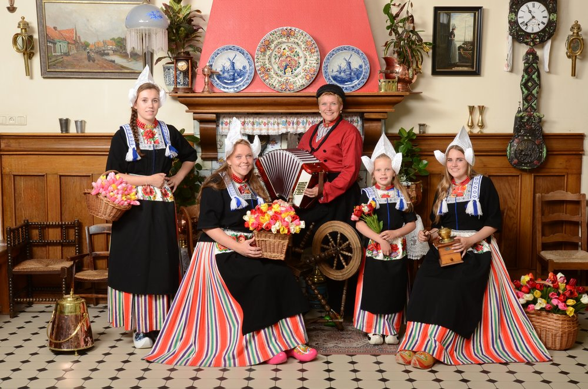
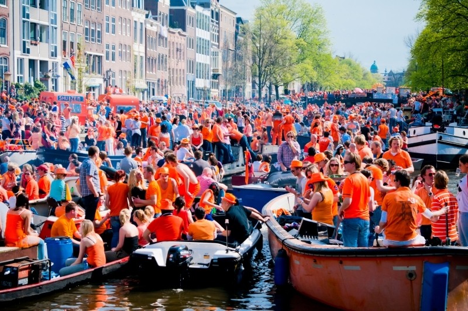
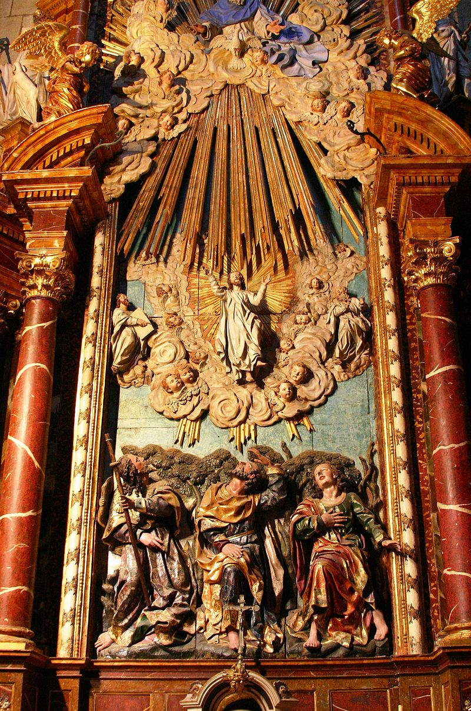
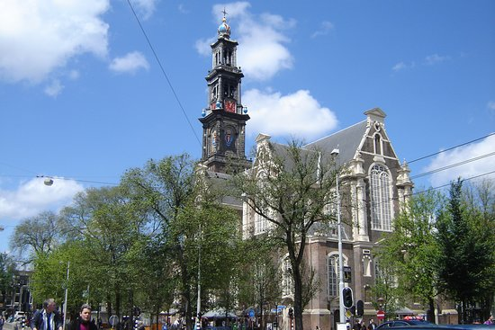

O primeiro compositor holandês
foi Jan Pieterszoon, que
viveu entre o século XVII e
contribuiu muito com a música
para instrumentos de teclas.
Depois dele, os Países Baixos
passaram três séculos sem dar
a luz à músicos de grande
reconhecimento e notoriedade.
Stamppot, comida típica da Holanda
Stamppoté um prato
tradicional holandês, feito
de uma combinação de purê de
batatas com um ou vários vegetais.
Essas combinações de vegetais
tradicionalmemte incluem chucrute,
endívia, couve, espinafre e nabo.

Trajes originais, na Provínvia de Volendam
As roupas femininas são
compostas de blusa, saia,
avental e um adorno na cabeça.
Uma peça bastante característica,
é conhecida como kraplap, que é
uam peça retangular utilizada
na parte da frente e de trás do peito.

Dia do Rei, Amsterdam
No Dia do Rei na Holanda, todos
se fantasiam de laranja e saem
pelas ruas comemorando um de seus
principais feriados, o Dia dos Reis,
ou o Koningsdag(em holandês).
Esse feriado ocorre todo dia 27
de Abril, desde 2014.

Festa da Ascencão
A Festa da Ascensão, conhecida
também como Quinta-Feira da Ascensão
ou apenas como Ascensão, comemora a
Ascensão de Jesus ao céu.
É celebrada no dia 18 de Maio.

Maior Igreja protestante da Holanda
As estatísticas do país
mostram que aproximadamente
30% dos neerdandeses seguem o
protestantismo. Enquanto o
resto da comunidade cristã é
maioritariamente seguidora
do Catolicismo.